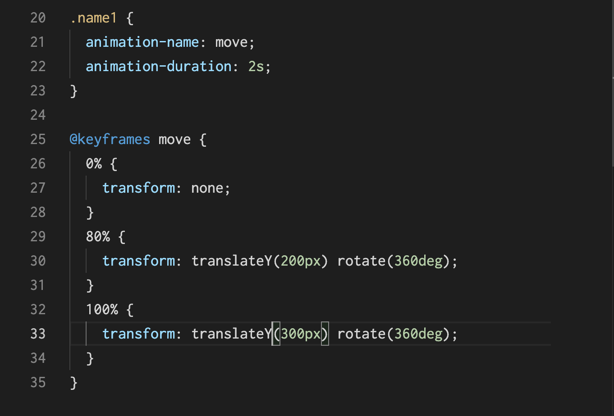
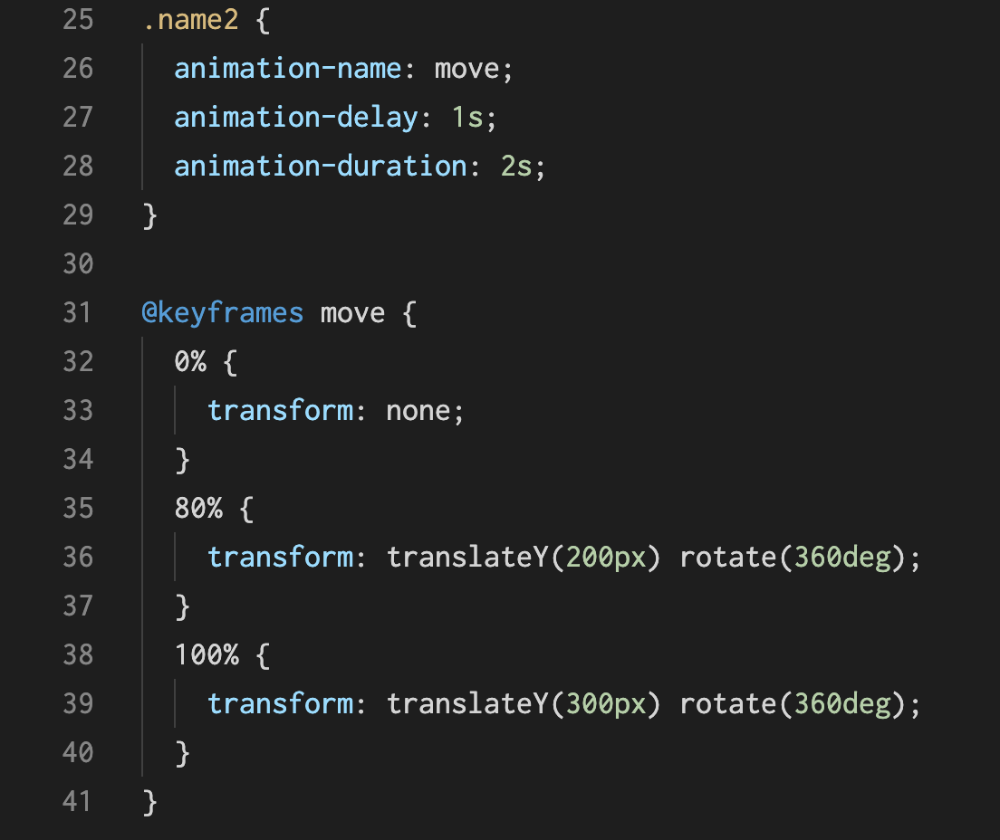
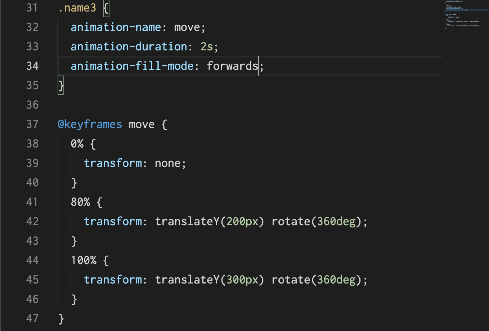
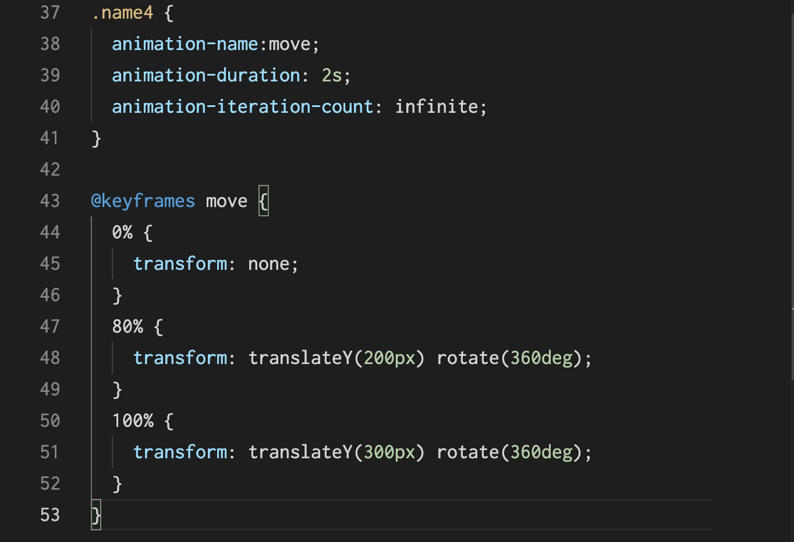

@keyframesとanimation
①@keyframes として、好きな名前をつける。
名前は英数字、ハイフン、アンダーバーを使って OK 。
｛｝の中にアニメーション開始から何パーセント経過したときにどうなるかを書く。
0% の地点では変形前と同じスタイルなので、書かなくてもいいが、
最初の状態を明示しておいても分かりやすいので、変形はしていないという意味で transform: none; とする
②適用したい要素にanimation-nameプロパティで @keyframes の名前をつけて呼び出す。

animation-durationとanimation-delay
animation-duration はアニメーションにかかる時間、animation-delay プロパティはアニメーションの開始時間を遅らせる。

animation-fill-mode
終わった後は、そのままの状態で居て欲しい場合、 animation-fill-mode というプロパティの値forwardsを使う

animation-iteration-count
何回繰り返すか指定する、nfinite にすると無限に繰り返し

animation-iteration-count
何回繰り返すか指定する、nfinite にすると無限に繰り返し